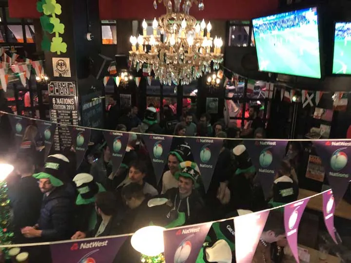
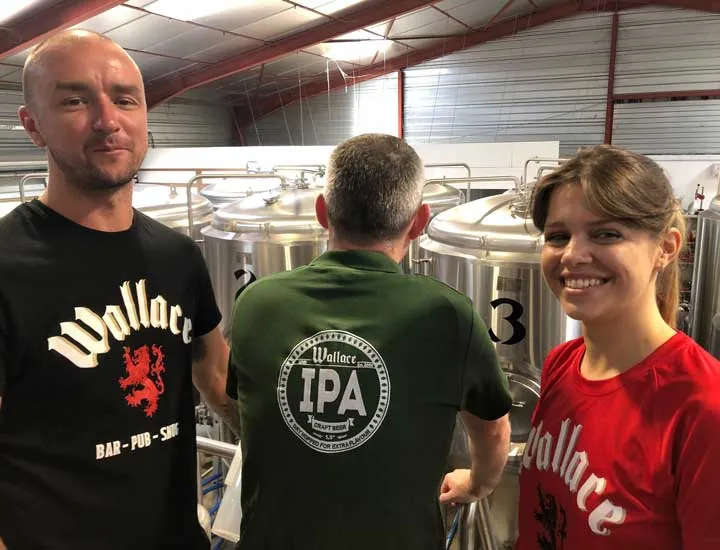
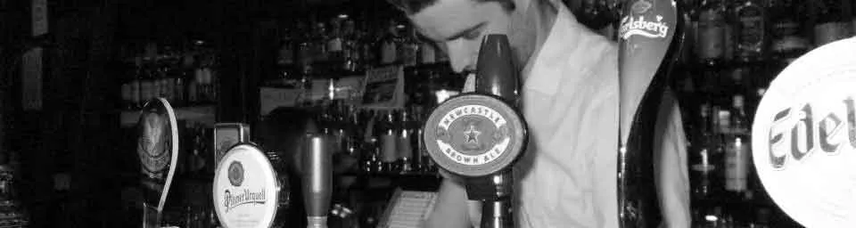

Vieux-Lyon, 5e arrondissement
Wallace Bar
200 whiskies et plus, 16 pressions, quiz le lundi, live le vendredi. Les matchs en direct.

Aujourd’hui
Horaires provisoires. Appelez le 04 72 00 23 91 pour confirmer.
Le bar
- 200+ whiskies
- 16 pressions
- Bouteilles, canettes, vins

Whisky et bière
Whiskies d’Écosse, d’Irlande et du monde. Une pression qui change : demandez au comptoir ce qui coule aujourd’hui.
- Sans alcool : Punk AF, Guinness 0.0
- Terrasse couverte (à confirmer)
- Prix sur place


Cuisine
Midi12h-15h, dimanche 11h-15hPlat du jour du lundi au vendredi
Soir19h-22h, dimanche 18h30-22h

- Fish & chips
- Burgers
- Pulled pork
- Wings et sliders
- Salades et bowls
- Menu enfant
- Desserts maison
Carte et prix sur place. Allergènes : demandez au comptoir.
Brunch le week-end À confirmer
Jours et horaires à vérifier par téléphone.
Matchs
Ce soir
À venir
Programme à venir, appelez-nous au 04 72 00 23 91.
Événements
Lundi 20h30
Quiz
Le grand quiz du lundi soir.
Vendredi
Live
Concert ou DJ set, horaires sur Instagram.
Soirées à thème
Saint-Patrick, Fête de la Musique : suivez-nous sur Instagram.

Horaires provisoires
| Jour | Bar | Cuisine |
|---|---|---|
| Lundi | 11h-00h30 | 12h-15h19h-22h |
| Mardi | 11h-00h30 | 12h-15h19h-22h |
| Mercredi | 11h-00h30 | 12h-15h19h-22h |
| Jeudi | 11h-00h30 | 12h-15h19h-22h |
| Vendredi | 11h-02h30 | 12h-15h19h-22h |
| Samedi | 11h-02h30 | 12h-15h19h-22h |
| Dimanche | 11h-00h30 | 11h-15h18h30-22h |